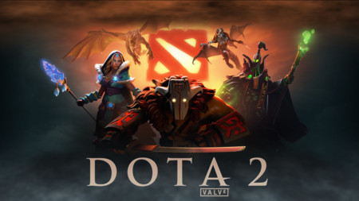

NotiGame
Portal de Noticias de Video Juegos
Call of Duty®: Mobile
Call of Duty: Mobile es un juego de disparos en primera persona gratuito desarrollado por Tencent Games y publicado por Activision para Android e iOS. Fue lanzado el 1 de octubre de 2019. Cuenta con dos monedas en el juego, así como un pase de batalla.

Dead by Daylight
Dead by Daylight es un juego de horror de multijugador en el que un jugador representa el rol del asesino despiadado y los 4 restantes juegan como supervivientes que intentan escapar de él para evitar ser capturados y asesinados. Los supervivientes juegan en tercera persona y tienen la ventaja de contar con una mejor percepción del entorno. El asesino juega en primera persona y está más enfocado en su presa.
Fornite
El modo Fortnite Battle Royale, basado en el género de Batalla Real, fue lanzado de forma independiente en septiembre de 2017 para Microsoft Windows, macOS, PlayStation 4 y Xbox One. En este modo de juego participan hasta 100 jugadores y luchan todos entre si hasta que solo queda uno vivo: el ganador.
